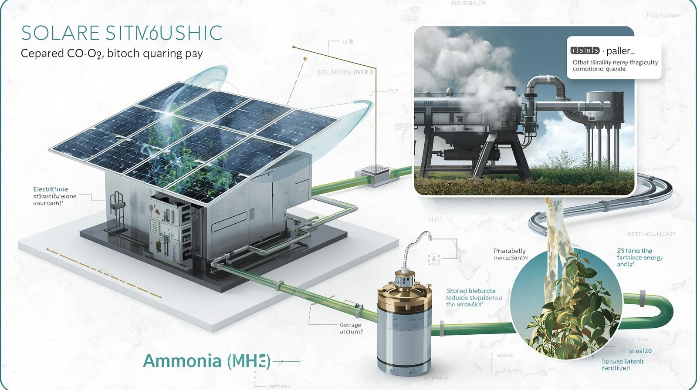

Edukace
Kombinace populárně-naučných vysvětlení a technických detailů. Energetika, CO₂, syntéza NH₃, geotermie a digitální řízení výkonu v jednom uceleném základu.
Energie 101
Populárně-naučně: Energie je schopnost vykonat práci – ohřát dům, rozsvítit žárovku nebo rozjet vlak. V přírodě ji získáváme hlavně ze Slunce a tepla Země.
Technicky: Energie se měří v joulech (J) nebo kilowatthodinách (kWh). Elektrický výkon (W) říká, jak rychle energii spotřebováváme / vyrábíme. Stabilní výkon je klíčový pro průmysl i domácnosti.
CO₂ a uhlíkový cyklus

Populárně-naučně: CO₂ putuje mezi atmosférou, půdou, oceány a živými organismy. Lidská činnost tento cyklus narušila – produkujeme CO₂ rychleji než příroda zvládá ukládat.
Technicky: SSCC pracuje s technickým uhlíkovým cyklem – CO₂ se zachytí, přemění chemicky a vrací zpět v uzavřeném okruhu, bez emisí do atmosféry.
Vodík a zelený amoniak (NH₃)
Populárně-naučně: Vodík je lehký plyn, který dokáže uchovat energii. Když se spojí s dusíkem, vzniká amoniak – stabilní kapalina, kterou lze skladovat jako energii.
Technicky: Zelený NH₃ vzniká kombinací H₂ z elektrolýzy a N₂ z atmosféry. Vysoký tlak + katalyzátory umožní syntézu, která funguje jako chemická baterie.
Geotermální energie

Populárně-naučně: Pod zemí je obrovské množství tepla. Vrt dokáže toto teplo čerpat a přivádět k použití na povrch.
Technicky: Teplota stoupá zhruba o 25–30 °C na kilometr. Soustavy EGS mohou dodat desítky MW stabilního výkonu pro syntézu NH₃ i vytápění.
Obnovitelné zdroje a stabilizace výkonu

Populárně-naučně: Solární a větrná energie jsou čisté a levné, ale proměnlivé. Potřebujeme způsob, jak ukládat energii na dobu, kdy Slunce nesvítí.
Technicky: Chemické zásobníky (NH₃), baterie a digitální řízení výkonu vyrovnávají výkyvy, aby byl k dispozici stabilní základ pro průmysl.
Digitální řízení výkonu
Populárně-naučně: Moderní energetika funguje jako mozek – sbírá data a automaticky rozhoduje, kam energii poslat.
Technicky: Prediktivní modely (AI), telemetrie a smart-grid systémy propojují uzly SSCC do jednoho digitálního ekosystému.